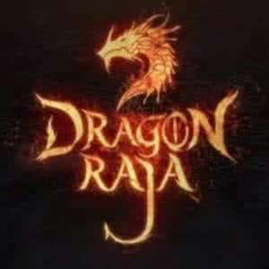
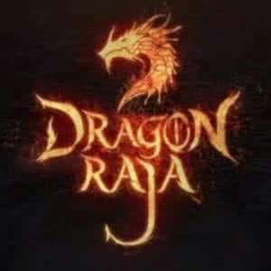

他寄人篱下，他考试吊车尾，他暗恋的班花被兄弟抢先告白，没人在乎过他的想法。废柴、衰仔，这就是路明非。可是，谁说衰仔就不能拉风？谁说废柴就考不上大学？谁说平凡就不能有梦想？
一个开法拉利的漂亮女生，在他最无助最难堪时接走了他。
一封来自美国的录取通知书，资助他巨额奖学金。
一次真人CS演练，他RP爆发，轰掉学院两大巨头，成为最拉风的新生。
一所神秘的屠龙学院，一批最精英最诡奇的人龙混血种，楚子航、恺撒、诺诺……在这里，演绎着最奇妙的青春，最热血的人生，击退龙族的进攻，拯救世界！
龙族回归！回忆开启，楚子航与龙族的首次正面交锋！不详的暴雨，诡异的黑影，神秘的黑色手提箱，身披战甲的“奥丁”如神般降临……狂舞的长刀，爆裂的流星，无人的高速公路，废柴父亲化身威风的英雄，以命相搏的激战，谁胜？谁负？而依旧衰爆的路明非，迎来卡塞尔学院的第一个暑假，却同时收到学校的临时任务和陈雯雯的邀约！龙族回归，危机再现！大地与山之王在混沌中睁开双眼，天神奥丁高举长矛俯视众生，龙族世界新的风暴蓄势待发……那些少年们，该何去何从？楚子航睁开黄金之瞳，凯撒抬起枪口瞄准命运，诺诺在风雷激荡中挽起长发，而路明非的成长生涯里终于出现了真正意义上的敌对者……所有的故事，在一个大雨之夜拉开序幕！
1991年冬，军人邦达列夫到达西伯利亚无名港口，他在那里看到了龙族骨骸与基因试验。但是谁也不曾料到，他的到来为这个绝密的基地带来了毁灭。港口爆炸后，他携带神秘物品离开，从此龙族世界的命运发生了改变。与此同时，一个神秘男孩带着女孩儿雷娜塔也悄悄离开了西伯利亚。
20年后，日本海域发现龙类心跳信号，校长昂热亲自制定SS计划，混血种少年恺撒、楚子航、路明非接受特别任务空降日本。一到东京，他们就受到了日本分部的盛情接待，执行员源稚生成为他们的导游。三个性格各异的少年带着任务压力来到东京，见分部领袖、交日本朋友、同时也流连街头夜生活、商场购物街，玩得不亦乐乎。随后，三人正式开始水下任务，深潜器将恺撒小组送至八千米深的海域，他们见到了令人惊叹的龙族城市。就在此时，龙类胚胎开始孵化，深潜器突然出现问题，日本分部失去联系，情况变得万分危急，三个少年将面临有史以来最严峻的考验。
日本海沟深处发现龙类遗迹，卡塞尔王牌专员组恺撒、楚子航、路明非在身深潜过程中遭遇龙类袭击。三人组挣扎逃离险境，试图联络本部，却发现遭到整个日本分部的背叛与追杀。千鹤町街头，三人与暴走族赤备狭路相逢，掀起疯狂的对决。死里逃生后，三人流落到歌舞伎町著名牛郎店高天原，开始了牛郎生涯。与此同时，因日本分部的叛离，校长昂热孤身一人来到东京，与自己昔日的弟子犬山贺兵刃相见，卡塞尔学院与蛇岐八家彻底决裂！
千鹤町街头，三人与暴走族赤备狭路相逢，掀起疯狂的对决。死里逃生后，三人流落到歌舞伎町著名牛郎店高天原，开始了牛郎生涯。与此同时，因日本分部的叛离，校长昂热孤身一人来到东京，与自己昔日的弟子犬山贺兵刃相见，卡塞尔学院与蛇岐八家彻底决裂！
而对于牛郎三人组来说，高天原是个完美的庇护所，恺撒和楚子航迅速俘获了大量粉丝，成为高天原镇店之宝。为了复仇并找到蛇岐八家的秘密，他们决定夜探源氏重工！大厦里危机重重，日本分部的追杀，死侍的进攻，三人组力透重围，终于闯入了密室，并看到大量神秘壁画，龙族历史由此揭开。
塞尔三人组从源氏重工撤出后，再次陷入东京暗流。路明非与绘梨衣为躲避蛇岐八家的追捕，躲进了情人旅馆。绘梨衣是开启白王宝藏的钥匙之一，恺撒与楚子航希望路明非能将绘梨衣带离日本。与此同时，酒德麻衣和薯片妞执行老板的“东京爱情故事”计划，要促成路明非与绘梨衣之间的世纪婚礼，然而路明非却背叛了计划，将绘梨衣送回了蛇岐八家。
在源稚生的带领下，蛇岐八家挖掘出了藏骸之井。猛鬼众首领王将和政宗在东京塔展开谈判，源稚生却突然到来，战斗陡生，政宗葬生火海，王将却死而复生。

源稚女与卡塞尔合作，欲与源稚生和解。白王却在此时苏醒，东京面临毁灭危机，副校长带卡塞尔装备部空降东京，全面介入危机。源稚生与源稚女在红井对决，两人却败给宿命，双双重伤。王将再次死而复活，以绘梨衣身体为容器抽出白王之血，贯通黄泉之路进化为白王。路明非目睹绘梨衣之死而悲伤欲绝，再次与路鸣泽完成交易。王与王的战争在天空打响，龙类的战争，从来不死不休
路明非成为了卡塞尔学院的新任学生会主席，偶然中路明非发现，楚子航消失了，除了他，其他人都不记得有这个人曾经存在，并怀疑他在任务中脑震荡。路明非在痛苦中挣扎，找到远在小岛上上新娘课程的诺诺。他并不知道在他离开学院的当天，学院遭受袭击，蒙受重大损失，而他是嫌疑人。这一切充满了诡异，而芬格尔从古巴千里迢迢赶来助阵，由此路明非和芬格尔、诺诺决定回到了楚子航的故乡北京，寻找楚子航曾经留下的痕迹。却在无意中与诺诺闯入楚子航当年遇过的尼伯龙根。奥丁再次出现，长枪直指诺诺。路明非为了救诺诺，求助路明泽。